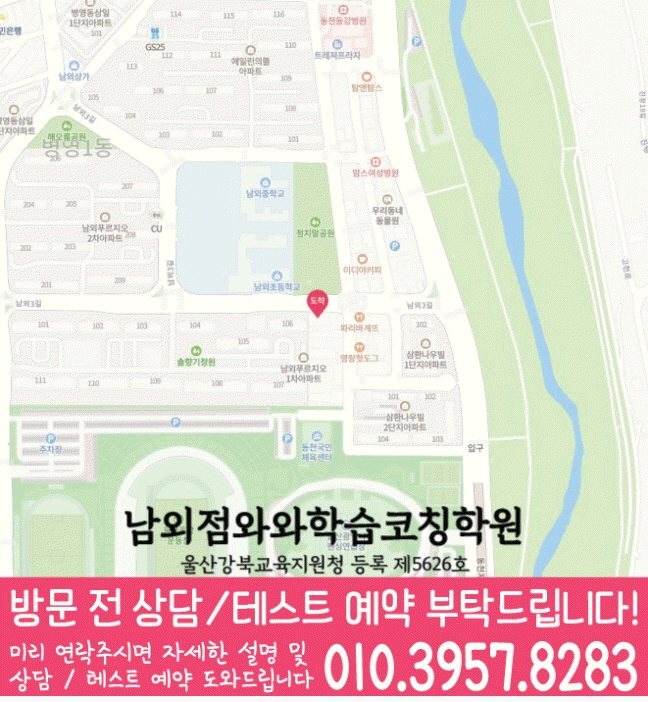

국어 수업 가능 학년
초3 · 초4 · 초5 · 초6 · 중1 · 중2 · 중3 · 고1
ACADEMIC SUPPORT LOCAL GUIDE
남외동 보습학원 선택 전 확인할 학생 유형, 현재 학년 학습 상태, 수업학교 자료 활용법, 토론형수업 질문, 주소 기준 등하원 계획을 안내합니다.
30초 핵심 안내
울산 중구 남외동에서 보습학원을 검색한 학부모가 가장 먼저 확인할 답은 “우리 아이가 막히는 지점을 설명할 수 있는가”입니다. 좋아하는 단원에서는 자신감이 있지만 공부 계획을 지나치게 크게 잡는 학생이라면 선행량보다 하루에 실행 가능한 필수 분량을 먼저 정하고 보완 과제를 뒤에 배치하는 계획을 우선 검토하고, 토론형수업도 홍보 표현이 아니라 적용 절차와 확인 방법으로 질문하는 편이 좋습니다. 남외동의 제공 수업 장소는 울산 중구 남외3길 15 남외프라자 401호입니다. 남외동에서 등록 전에는 출발 지점별 이동과 수업 종료 후 귀가 계획까지 맞춰 보아야 합니다.
남외동은 수업 가능 생활권 기준입니다. 실제 방문 센터는 와와학습코칭센터 남외점이며, 주소와 등록 정보는 아래 센터 기준 정보에서 확인할 수 있습니다.
초3 · 초4 · 초5 · 초6 · 중1 · 중2 · 중3 · 고1
초2 · 초3 · 초4 · 초5 · 초6 · 중1 · 중2 · 중3 · 고1 · 고2 · 고3
초2 · 초3 · 초4 · 초5 · 초6 · 중1 · 중2 · 중3 · 고1 · 고2 · 고3


남외초앞 파리바게트 사거리 마트위 4층
센터 기준 정보
센터명·주소·등록 정보와 교습비 확인 경로를 상담 전에 살펴볼 수 있도록 정리했습니다.
울산 중구 남외동 상담 기준
울산 중구 남외3길 15 남외프라자 401호
울산강북교육지원청 등록 제5626호
실제 수업 가능 시간은 학년·과목별 일정에 따라 상담에서 확인합니다.
동네명은 수업 가능 지역을 찾기 위한 안내 기준입니다.
남외초
남외중 · 울산중
울산고 · 가온고
센터명·주소·등록번호·가능 학년·학교 참고 정보는 제공된 센터 자료를 기준으로 정리했으며, 실제 수업 범위와 일정은 상담에서 다시 확인합니다.
지역별 학습 안내
학생의 과목별 학습 상황과 상담 전에 확인할 기준을 여섯 가지 주제로 나누어 정리했습니다.
검색 기준 지역은 울산 중구 남외동이지만 제공된 학원 주소는 울산 중구 남외3길 15 남외프라자 401호이므로 동네 키워드만으로 거리를 판단해서는 안 됩니다. 남외동 학부모는 지도상의 직선거리보다 학교에서 학원, 학원에서 가정으로 이어지는 실제 순서를 확인하는 편이 좋습니다. 울산 중구 남외동 학부모가 이동 시간을 계산할 때는 수업 전 식사나 돌봄 일정, 종료 후 귀가 방법, 시험 기간의 시간표 변경 가능성까지 한 주 일정에 넣어 보십시오. 남외동 등원 계획에서는 이동 부담이 학습 시간을 잠식하지 않아야 보습학원의 복습과 과제가 생활 안에서 유지될 수 있습니다.
“토론형수업”은 시간대나 수업 이름만으로 적합성을 판단하기 어렵습니다. 울산 중구 남외동에서 토론형수업을 비교할 때는 참여 인원, 질문 방식, 개별 풀이 확인, 과제와 오답 처리, 결석 시 대체 방법을 같은 순서로 비교하십시오. 남외동 학부모가 토론형수업을 검토할 때는 계획을 크게만 세우는 학생에게는 수업 형식보다 집중이 끊기거나 이해가 막혔을 때 교사가 어떻게 발견하고 개입하는지가 중요합니다. 남외동 학부모는 토론형수업이 생활 일정과 맞는지뿐 아니라 수업 후 혼자 복습할 자료와 피드백이 남는지도 확인해야 합니다.
이번 남외동 페이지에서 설정한 학생은 좋아하는 단원에서는 자신감이 있지만 공부 계획을 지나치게 크게 잡는 학생입니다. 남외동 진단에서는 겉으로 보이는 점수만으로 원인이 드러나지 않으므로 최근 교재에서 멈춘 지점, 혼자 풀 때의 첫 시도, 과제 후 재확인 여부를 따로 살펴야 합니다. 남외동에서 이 유형을 지도할 때는 하루에 실행 가능한 필수 분량을 먼저 정하고 보완 과제를 뒤에 배치하는 계획을 먼저 적용하는 편이 좋습니다. 울산 중구 남외동 학생은 현재 학년의 진도를 무조건 앞당기거나 문제 수를 갑자기 늘리면 약점이 가려질 수 있으므로 설명 이해와 독립 풀이를 분리해 관찰해야 합니다.
제공 자료에서 남외동 수업학교로 남외초, 남외중 등이 안내되어 있습니다. 남외동 학부모는 이 명칭만으로 특정 시험 일정이나 범위를 가정하지 말고 학생이 실제로 받은 안내 자료를 출발점으로 삼아야 합니다. 울산 중구 남외동의 현재 학년 진도, 수행 과제, 이전 시험 오답과 남은 기간을 한 표에 넣으면 학교 대비와 누적 복습의 비중을 조정하기 쉽습니다. 남외동 페이지는 제공된 수업학교 외의 이름을 추가하지 않으며 다른 학교의 수업 가능 여부는 상담에서 확인하도록 안내합니다.
남외동 보습학원 상담을 예약하기 전에는 최근 평가 자료, 현재 교재, 학교 일정표와 가능한 등원 요일을 준비하면 답이 구체적이 됩니다. 울산 중구 남외동 학부모가 비교할 때는 첫째 진단 방식, 둘째 수업 인원과 개별 확인 범위, 셋째 과제·오답 처리, 넷째 결석 보강, 다섯째 피드백 주기, 여섯째 비용·변경·환불 기준을 같은 순서로 묻는 것이 좋습니다. 토론형수업 설명은 구두 약속으로 끝내지 말고 적용 대상, 시작 시점, 예외 상황과 확인 방법을 기록해 두십시오. 남외동에서 첫 주 계획을 확인할 때는 상담 당일 성적 상승 폭이나 입시 결과를 단정하는 표현보다 현재 자료를 근거로 조정 가능한 계획을 제시하는지를 선택 기준으로 삼으십시오.
남외동에서 수업 적합성을 볼 때 초기 변화는 점수보다 먼저 행동에서 나타날 수 있습니다. 남외동 학습 기록에서는 문제를 시작하는 시간이 짧아졌는지, 모르는 지점을 표시하는지, 오답을 다시 풀 때 같은 실수가 줄었는지, 과제 계획을 스스로 확인하는지를 기록하십시오. 좋아하는 단원에서는 자신감이 있지만 공부 계획을 지나치게 크게 잡는 학생에게는 특히 계획한 필수 분량을 실제로 끝내는 비율이 보이는지 살펴야 합니다. 남외동 학생의 변화를 살필 때는 점수는 시험 난이도와 범위에 따라 움직이므로 한 번의 결과만으로 보습학원의 적합성을 판단하지 말고 학습 기록과 학교 평가를 함께 보아야 합니다.
FAQ
남외동 페이지에 제공된 주소는 울산 중구 남외3길 15 남외프라자 401호입니다. 남외동 학생의 이동 가능성은 학교·가정 출발 시간을 구분하고 가장 바쁜 요일의 종료·귀가 시각을 계산한 뒤 편의 서비스 여부까지 확인해 판단하세요.
남외동 상담에서는 수업 인원, 질문 방식, 개별 풀이 확인, 과제·오답 처리와 결석 시 대체 방법이 학생에게 맞는지 비교하십시오.
남외동 페이지에 제공된 학교 정보는 남외초, 남외중입니다. 남외동 내신 계획은 학교명보다 실제 교과서·범위표·평가 일정에 맞추어야 하며, 제공 목록에 없는 학교의 수업 여부는 상담에서 다시 확인해야 합니다.
좋아하는 단원에서는 자신감이 있지만 공부 계획을 지나치게 크게 잡는 학생이라면 현재 학년의 빈틈을 나누어 보고 하루에 실행 가능한 필수 분량을 먼저 정하고 보완 과제를 뒤에 배치하는 계획을 실제 수업과 과제에 연결하는지를 우선 확인하는 편이 좋습니다.
성적 변화는 학생의 시작 수준·평가 난도·실행 기간의 영향을 받기 때문에 남외동 상담에서는 향상 폭보다 확인할 과정 지표를 먼저 정해야 합니다. 남외동 학생은 계획한 필수 분량을 실제로 끝내는 비율 같은 과정 지표와 학교 평가를 함께 추적하며 계획을 조정하는 설명이 더 현실적입니다.
상담 상황 예시
실제 이용자의 발언을 옮긴 것이 아니라, 남외동 학부모 상담에서 자주 검토할 상황을 사례로 정리했습니다.
남외동 상담 전에는 계획을 크게만 세우는 문제를 단순히 의지 부족으로 생각했는데, 최근 교재와 과제 기록을 나눠 보니 무엇을 먼저 바꿔야 할지 이해하기 쉬웠습니다. 남외동에서는 결과를 서두르기보다 먼저 하루에 실행 가능한 필수 분량을 먼저 정하고 보완 과제를 뒤에 배치하는 계획을 확인하자는 기준이 현실적으로 느껴졌습니다.
남외동 상담에서는 학생에게 질문하기 편한지, 숙제량을 감당할 수 있는지, 귀가가 부담스럽지 않은지를 따로 물어본 점이 좋았습니다. 남외동에서 학원을 고를 때 성적 약속보다 실제 첫 주 계획을 보는 이유를 이해하게 됐습니다.